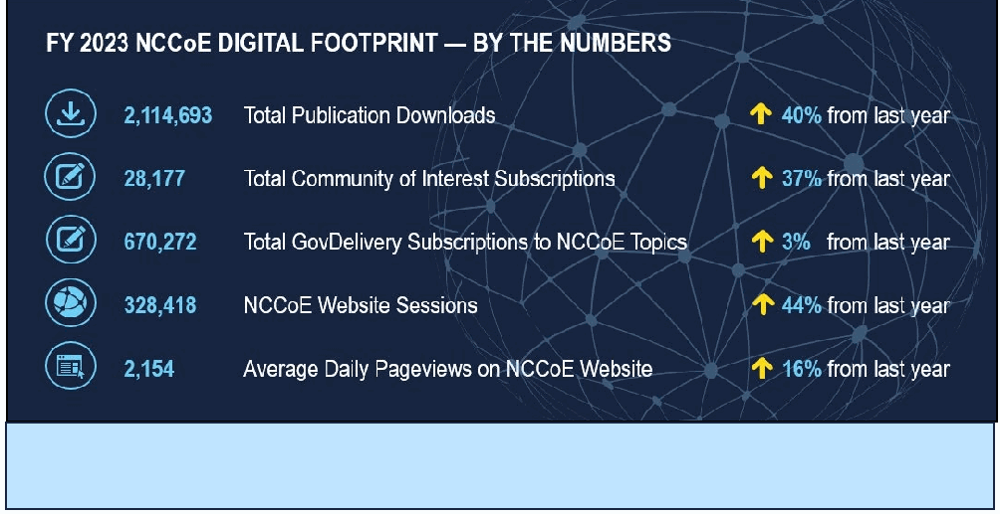

NIST SP 800-229 日本語訳
英語タイトル : Fiscal Year 2023 Cybersecurity and Privacy Annual Report公開日 : 2024-05-20
原文URL : https://csrc.nist.gov/pubs/sp/800/229/final
翻訳編集 : 自動生成
[要約] SP 800-229 は、2023会計年度における NIST 情報技術研究所（ITL）のサイバーセキュリティおよびプライバシープログラムの研究活動と成果をまとめた年次報告書です。国際標準の策定への参加、耐量子計算機暗号、CSF 2.0 と新しい CSF プロファイル、ソフトウェアとサプライチェーン、IoT ガイドライン、NCCoE プロジェクトなどの取り組みを紹介します。新しいコメントサイトの開設、Phish scale のリリース、ID およびアクセス管理プログラムの進展、自動運転車向けの SERI なども取り上げています。
有志による非公式の日本語訳です。NIST および米国商務省が作成・承認・推奨したものではありません。要件の確認にはNIST の正式版 PDFを参照してください。
2023 Cybersecurity & Privacy Annual Report
2023年 サイバーセキュリティおよびプライバシー年次報告書
NIST Special Publication 800
NIST特別刊行物800
NIST SP 800-229
NIST SP 800-229
Fiscal Year 2023 Cybersecurity and Privacy Annual Report
2023年度 サイバーセキュリティおよびプライバシー年次報告書
Patrick O’Reilly, Editor
Computer Security Division
Patrick O’Reilly、編者
コンピュータセキュリティ部門
Information Technology Laboratory
情報技術研究所
Kristina Rigopoulos, Editor
Applied Cybersecurity Division
Information Technology Laboratory
クリスティーナ・リゴポロス、編者
応用サイバーセキュリティ部門
情報技術研究所
This publication is available free of charge from: https://doi.org/10.6028/NIST.SP.800-229
本書は以下より無料で入手できます: https://doi.org/10.6028/NIST.SP.800-229
May 2024
2024年5月
［米国商務省の紋章。公的な標章のため、この非公式サイトには掲載していない。原本 PDF を参照。］
U.S. DEPARTMENT OF COMMERCE Gina M. Raimondo, Secretary
米国商務省 ジーナ・M・レモンド長官
NATIONAL INSTITUTE OF STANDARDS AND TECHNOLOGY
米国国立標準技術研究所
Laurie E. Locascio, NIST Director and Under Secretary of Commerce for Standards and Technology
ローリー・E・ロカシオ、NIST所長 兼 標準・技術担当商務次官
Table of Contents
目次
Cryptography 5
暗号技術 5
Education, Training & Workforce Development 7
教育、トレーニングおよび人材育成 7
Emerging Technologies 9
新興技術 9
Human-Centered Cybersecurity 11
人間中心のサイバーセキュリティ 11
Identity & Access Management 13
アイデンティティおよびアクセス管理 13
Privacy 15
プライバシー 15
Risk Management 17
リスクマネジメント 17
Trustworthy Networks & Platforms 19
信頼できるネットワークおよびプラットフォーム 19
NIST National Cybersecurity Center of Excellence 21
NIST 国立サイバーセキュリティ・センター・オブ・エクセレンス 21
FOREWORD
序文
This year has been one to remember!
今年は記憶に残る一年であった！
As we wrapped up our celebration of 50 years of work in cybersecurity, we continued to prioritize our quest for deep collaboration with the community and seamless coordination across NIST throughout 2023.
サイバーセキュリティにおける50年間の取り組みの記念を締めくくるにあたり、私たちは2023年を通じて、コミュニティとの緊密な連携とNIST全体でのシームレスな協調の追求を引き続き優先した。
Our research and demonstrated practical applications work spanned across several key priority areas, which are outlined in this report—with hyperlinked pointers to more specifics if you'd like to dig deeper or learn more.
当機関の研究および実証された実践的応用の取り組みはいくつかの重要な優先分野に及んでおり、それらは本報告書で概説している。さらに深く掘り下げたり詳細を把握したりしたい場合に備えて、より具体的な情報へのハイパーリンク付きポインタも記載している。
NIST’s work meshes well with – and is a key part of – the National Cybersecurity Strategy and the related Implementation Plan. NIST is singled out for its work related to international standards, an area that we have prioritized and is yielding notable results.
NISTの取り組みは、国家サイバーセキュリティ戦略（National Cybersecurity Strategy）および関連する実施計画（Implementation Plan）とよく調和しており、その重要な一部を構成している。NISTは国際標準に関連する取り組みで特筆されており、これは当機関が優先的に推進し、顕著な成果を上げている分野である。
In the same vein, the U.S. Government National Standards Strategy for Critical and Emerging Technology released in 2023, cites Cybersecurity and Privacy as “cross-cutting issues that are critical to enabling the development and deployment of emerging technologies and promote the free flow of data and ideas with trust.” NIST has been assigned to lead the federal government in advancing that strategy.
同様に、2023年に発表された「重要・新興技術に関する米国政府国家標準化戦略」では、サイバーセキュリティとプライバシーを「新興技術の開発および展開を可能にし、信頼を伴うデータとアイデアの自由な流通を促進する上で不可欠な横断的課題」として挙げている。NISTはその戦略を推進する上で連邦政府を主導する役割を割り当てられている。
We hope that you will take the time to review some of the key highlights of our cybersecurity and privacy accomplishments from FY 2023 and to explore some of the projects that we are so proud of.
2023年度（FY 2023）における当機関のサイバーセキュリティおよびプライバシーの成果に関する主なハイライトを確認し、私たちが誇りを持って進めているプロジェクトのいくつかを見ていただければ幸いである。
Most importantly, we look forward to learning more from you as our journeys together continue. As ever, we appreciate your support and hope that you are making the best possible use of NIST’s work.
何よりも、共に歩みを続ける中で、皆様からさらに多くのことを学べることを楽しみにしている。これまで同様、皆様の支援に感謝するとともに、NISTの成果を最大限に活用していただいていることを願っている。
~ Kevin Stine NIST Chief Cybersecurity Advisor
~ ケビン・スタイン NIST 首席サイバーセキュリティアドバイザー
Cryptography
暗号技術
暗号技術の章の扉絵。光るデジタルネットワークが中央の明るい光に集まる抽象画像（Shutterstock提供） ［装飾の画像。本文を読むのに必要のない装飾のため、この非公式サイトには掲載していない。原本 PDF を参照。］
Credit: ShutterStock
クレジット: ShutterStock
CRYPTOGRAPHY
暗号技術
Cryptography is foundational to our security and data protection needs. The standards, guidelines, recommendations, and tools provided by NIST’s Cryptography priority area enable trustworthy assurance of integrity and confidentiality in all types of information and technology – now and in the future.
暗号技術は、私たちのセキュリティおよびデータ保護のニーズの基盤となるものである。NISTの暗号技術重点分野が提供する標準、ガイドライン、推奨事項、およびツールは、あらゆる種類の情報および技術において、完全性と機密性の信頼できる保証を可能にする——現在、そして将来にわたって。
Major Accomplishments in FY 2023:
FY 2023における主な成果:
•The Post-Quantum Cryptography (PQC) team hosted the Fourth PQC Standardization Conference in November 2022. In response to the Call for Additional Signatures, 40 candidate algorithms were submitted, and the first three draft PQC standards were released for public comment.
•耐量子計算機暗号（PQC）チームは、2022年11月に第4回PQC標準化会議を開催した。追加署名方式の募集に応じて40件の候補アルゴリズムが提出され、最初の3つのPQC標準草案がパブリックコメントのために公開された。
•The Lightweight Cryptography team announced the decision to standardize the Ascon family for lightweight cryptography applications and published IR 8454, Status Report on the Final Round of the NIST Lightweight Cryptography Standardization Process, which describes the selection process. The team also hosted the Sixth Lightweight Cryptography Workshop.
•軽量暗号チームは、軽量暗号アプリケーション向けにAsconファミリーを標準化する決定を発表し、選定プロセスを説明したIR 8454『NIST軽量暗号標準化プロセスの最終ラウンドに関するステータスレポート』を公開した。同チームはまた、第6回軽量暗号ワークショップを主催した。
•The Multi-Party Threshold Cryptography (MPTC) and Privacy-Enhancing Cryptography (PEC) projects jointly released the initial public draft of IR 8214C, NIST First Call for Multi-Party Threshold Schemes (MPTS). The document’s scope includes advanced techniques, such as fully homomorphic encryption, zero-knowledge proofs, and the building blocks of secure multi-party computation. As part of an effort to obtain public comments, NIST hosted the MPTS 2023 workshop and three events of the Special Topics on Privacy and Public Auditability (STPPA).
•マルチパーティ閾値暗号（MPTC）プロジェクトとプライバシー強化暗号（PEC）プロジェクトは共同で、IR 8214C『NISTマルチパーティ閾値方式（MPTS）に関する第1回募集』の初期公開草案を公開した。本文書の対象範囲には、完全準同型暗号、ゼロ知識証明、セキュアマルチパーティ計算の構成要素などの高度な技術が含まれている。パブリックコメントを募集する取り組みの一環として、NISTはMPTS 2023ワークショップと、プライバシーおよび公的監査可能性に関する特別トピック（STPPA）の3つのイベントを主催した。
•NIST’s Crypto Publication Review Board completed seven publication reviews, and five reviews are in progress to update and modernize the portfolio of cryptographic standards.
•NISTの暗号刊行物レビュー委員会は7件の刊行物レビューを完了し、暗号標準のポートフォリオを更新および近代化するために5件のレビューが進行中である。
Learn more about this priority area
この重点分野についての詳細を見る
Education, Training & Workforce Development
教育、トレーニング & 人材育成
NICEの催しでライオンのマスコットと一緒に記念撮影する参加者。参加者はNICEとCYBERの文字を掲げている（iKeepSafe提供） ［人物の写真。人物が写っているため、この非公式サイトには掲載していない。原本 PDF を参照。］
Credit: iKeepSafe
クレジット: iKeepSafe
EDUCATION, TRAINING & WORKFORCE
教育、トレーニング & 人材
Energizing, promoting, and coordinating the workforce are key priorities for NIST. The National Initiative for Cybersecurity Education (NICE) team supports a robust community that works together to advance an integrated ecosystem of cybersecurity education, training, and workforce development.
人材の活性化、推進、および調整は、NISTにとって重要な優先事項である。サイバーセキュリティ教育のための国家イニシアチブ（NICE）チームは、サイバーセキュリティ教育、トレーニング、および人材育成の統合されたエコシステムを推進するために協力する強固なコミュニティを支援している。
Major Accomplishments in FY 2023:
2023年度（FY 2023）における主な成果：
•On December 5, 2022, the NICE Workforce Framework for Cybersecurity (NICE Framework) K12 FAQ was released at the NICE K12 Cybersecurity Education Conference in St. Louis, MO.
•2022年12月5日、ミズーリ州セントルイスで開催されたNICE K12サイバーセキュリティ教育カンファレンスにおいて、サイバーセキュリティのためのNICE労働力フレームワーク（NICEフレームワーク）K12 FAQが公開された。
•The NICE Framework continued to be updated throughout FY 2023, including calls for comments on updated materials. IR 8355, NICE Framework Competencies Areas: Preparing a Job-Ready Cybersecurity Workforce, was published on June 1, 2023.
•NICEフレームワークは、更新された資料に対するコメント募集を含め、2023年度（FY 2023）を通じて継続的に更新された。2023年6月1日には、IR 8355「NICE Framework Competencies Areas: Preparing a Job-Ready Cybersecurity Workforce（NICEフレームワークのコンピテンシー領域：即戦力となるサイバーセキュリティ人材の育成）」が発行された。
•Diversity, equity, inclusion, and accessibility (DEIA) in the cybersecurity workforce and education were key efforts in 2023. NICE released a DEIA resource page and launched a new Diversity and Inclusion Community of Interest.
•サイバーセキュリティ人材および教育における多様性、公平性、包括性、アクセシビリティ（DEIA）は、2023年における重要な取り組みであった。NICEはDEIAリソースページを公開し、新たな「ダイバーシティ＆インクルージョン関心コミュニティ（Community of Interest）」を立ち上げた。
•The Small Business Cybersecurity Corner launched a new Community of Interest with the National Cybersecurity Center of Excellence (NCCoE) and participated in various events throughout the year to showcase and share resources.
•スモールビジネス・サイバーセキュリティ・コーナー（Small Business Cybersecurity Corner）は、国立サイバーセキュリティ卓越センター（NCCoE）とともに新たな関心コミュニティ（Community of Interest）を立ち上げ、年間を通じてさまざまなイベントに参加してリソースの紹介や共有を行った。
•NIST has continued to bring the community together throughout the year with the Federal Information Security Educators (FISSEA) Forums, NICE Webinars Series, and Cybersecurity Career Week and by supporting other events through cooperative agreements, such as the NICE Conference, NICE K12 Conference, and the US Cyber Games.
•NISTは、連邦情報セキュリティ教育者（FISSEA）フォーラム、NICEウェビナーシリーズ、サイバーセキュリティ・キャリア・ウィークの開催や、NICEカンファレンス、NICE K12カンファレンス、US Cyber Gamesなどの他のイベントを協力協定を通じて支援することにより、年間を通じてコミュニティの結束を継続してきた。
Learn more about this priority area
この重点分野の詳細を見る
Emerging Technologies
新興技術
新興技術の章の扉絵。夜の都市にデジタルネットワークの光が重ねられている（Shutterstock提供） ［装飾の画像。本文を読むのに必要のない装飾のため、この非公式サイトには掲載していない。原本 PDF を参照。］
Credit: ShutterStock
クレジット：ShutterStock
EMERGING TECHNOLOGIES
新興技術
The rapid evolution of technology brings both extraordinary opportunities and unavoidable challenges. At NIST, our cybersecurity researchers study these emerging technologies to understand their security and privacy capabilities, vulnerabilities, configurations, and overall structures in order to develop standards, guidelines, and references for improving their approaches to cybersecurity before they are deployed.
技術の急速な進化は、極めて大きな機会と不可避の課題の双方をもたらしている。NISTでは、当機関のサイバーセキュリティ研究者がこれらの新興技術を研究し、そのセキュリティおよびプライバシー機能、脆弱性、構成、ならびに全体的な構造を理解することで、それらが配備される前にサイバーセキュリティへのアプローチを改善するための標準、ガイドライン、およびリファレンスを策定している。
Major Accomplishments in FY 2023:
FY 2023における主な成果:
Cybersecurity projects in Strategic and Emerging Research Initiatives (SERI) for Autonomous Vehicles (AV) included the following:
自動運転車（AV）向けの戦略的・新興研究イニシアチブ（SERI）におけるサイバーセキュリティプロジェクトには、以下が含まれる:
•A workshop on Standards and Performance Metrics for On-Road Automated Vehicles was held to solicit stakeholder feedback on the challenges and opportunities in developing standards and performance metrics for this complex interdisciplinary field.
•この複雑で学際的な分野における標準および性能指標の開発に伴う課題と機会についてステークホルダーからのフィードバックを募るため、路上自動運転車の標準および性能指標（Standards and Performance Metrics for On-Road Automated Vehicles）に関するワークショップが開催された。
•The NIST AV Community of Interest (COI) has over 300 participants and continues to serve as a communications channel for NIST activities in the automotive industry.
•NIST AV関心コミュニティ（COI）は300名を超える参加者を擁し、自動車業界におけるNISTの活動に関するコミュニケーションチャネルとして機能し続けている。
•The Capabilities of Dioptra — an experimental testbed for machine learning algorithms — continued to expand.
•機械学習アルゴリズムの実験用テストベッドであるDioptraの機能は、拡張を続けた。
•NIST built a SERI prototype that measures the sensitivity of uncertainty estimation in computer vision models for autonomous driving.
•NISTは、自動運転向けのコンピュータビジョンモデルにおける不確実性推定の感度を測定するSERIプロトタイプを構築した。
•Project researchers collaborated with external partners with appropriate datasets and computational resources.
•プロジェクトの研究者は、適切なデータセットと計算リソースを有する外部パートナーと連携した。
In March 2023, the Adversarial Artificial Intelligence (AI) team released the initial public draft of AI 100-2 E2023, Adversarial Machine Learning: A Taxonomy and Terminology of Attacks and Mitigations, for public comment. Leading experts in the industry were invited to assist with adjudicating the public feedback to prepare a final AI 100-2 document, which is slated to be published in early 2024.
2023年3月、敵対的人工知能（AI）チームは、AI 100-2 E2023『敵対的機械学習：攻撃と緩和策の分類および用語』の初期公開草案をパブリックコメントのために公開した。2024年初頭に公開が予定されている最終的なAI 100-2文書を準備するため、業界をリードする専門家が招かれ、一般から寄せられたフィードバックの裁定を支援した。
Learn more about this priority area
この重点分野についての詳細を見る
Human-Centered Cybersecurity
人間中心のサイバーセキュリティ
人がコンピューターを操作する姿に、鍵やデジタルセキュリティの図柄を重ねた画像（Shutterstock提供） ［人物の写真。人物が写っているため、この非公式サイトには掲載していない。原本 PDF を参照。］
Credit: ShutterStock
クレジット: ShutterStock
HUMAN-CENTERED CYBERSECURITY
人間中心のサイバーセキュリティ
The mission of the Human-Centered Cybersecurity priority area is to “champion the human in cybersecurity.” Through research and other human-centered projects, the program team seeks to better understand and improve people’s cybersecurity interactions, empowering them to be active, informed participants in cybersecurity.
人間中心のサイバーセキュリティ重点分野の使命は、「サイバーセキュリティにおける人間を支援する」ことである。研究やその他の人間中心のプロジェクトを通じて、プログラムチームは人々のサイバーセキュリティに関するインタラクションをより深く理解し改善することを目指しており、人々が主体的で十分な情報を得たサイバーセキュリティの参加者となれるよう支援している。
Major Accomplishments in FY 2023:
FY 2023における主な成果:
•An interview study of parent-child pairs shed light on how parents can best support their children’s online privacy, security, and safety. The research insights are informing NIST’s participation and contribution to the interagency Task Force on Kids Online Health and Safety.
•親子ペアを対象としたインタビュー調査により、保護者が子どものオンライン上のプライバシー、セキュリティ、および安全性をどのように最善の形で支援できるかが明らかになった。この研究の知見は、子どものオンラインの健康と安全に関する省庁間タスクフォース（Task Force on Kids Online Health and Safety）に対するNISTの参加および貢献に役立てられている。
•The phishing project team was awarded a U.S. Department of Commerce Gold Medal for creating the Phish Scale — a revolutionary tool to rate socially engineered email attacks to strengthen an organization’s security posture. The scale has been adopted by security training coordinators in public- and private-sector organizations, both domestically and internationally.
•フィッシングプロジェクトチームは、組織のセキュリティ態勢を強化するためにソーシャルエンジニアリングによる電子メール攻撃を評価する革新的なツール「Phish Scale」を開発したことで、米国商務省金メダル（U.S. Department of Commerce Gold Medal）を授与された。このスケールは、国内外の公共部門および民間部門の組織におけるセキュリティトレーニングコーディネーターによって採用されている。
•A role-based training study provided insights into the approaches and challenges faced by federal organizations when implementing cybersecurity training activities. The research resulted in the development of recommendations and resources to assist organizations in improving their role-based training activities.
•役割ベースのトレーニングに関する調査研究により、連邦機関がサイバーセキュリティトレーニング活動を実施する際に直面するアプローチや課題についての知見が得られた。この研究の結果、組織が役割ベースのトレーニング活動を改善するのを支援するための推奨事項およびリソースの開発につながった。
•A widely distributed article and handout titled, “Users Are Not Stupid: Six Cybersecurity Pitfalls Overturned,” provided cybersecurity practitioners with evidence-based recommendations on how they can consider the human element in their work.
•『Users Are Not Stupid: Six Cybersecurity Pitfalls Overturned』（ユーザーは愚かではない：覆された6つのサイバーセキュリティの落とし穴）と題された広く配布された記事および配布資料は、サイバーセキュリティの実務者に対し、業務において人的要素をどのように考慮できるかに関するエビデンスに基づく推奨事項を提供した。
Learn more about this priority area
この重点分野についての詳細を見る
Identity and Access Management
アイデンティティおよびアクセス管理
デジタル本人確認を表すイラスト。本人確認書類、顔写真、指紋、パスワード、フォルダーなどのアイコンが配置されている（Shutterstock提供） ［装飾の画像。本文を読むのに必要のない装飾のため、この非公式サイトには掲載していない。原本 PDF を参照。］
Credit: ShutterStock
クレジット: ShutterStock
IDENTITY AND ACCESS MANAGEMENT
アイデンティティおよびアクセス管理
Identity and access management (IAM) is the cornerstone of data protection, privacy, and security. NIST’s IAM priority area provides the research, guidance, and technology transition activities to help ensure that the right humans, devices, data, and processes have the right access to the right resources at the right time.
アイデンティティおよびアクセス管理（IAM）は、データ保護、プライバシー、およびセキュリティの基盤である。NISTのIAM重点分野は、適切な人間、デバイス、データ、およびプロセスが、適切なタイミングで適切なリソースに対して適切なアクセス権を確実に持てるよう支援するための研究、ガイダンス、および技術移行活動を提供している。
Major Accomplishments in FY 2023:
FY 2023における主な成果：
•NIST published draft revisions of all four volumes of SP 800-63-4, Digital Identity Guidelines, to advance modern digital identity controls.
•NISTは、現代的なデジタルアイデンティティ管理策を推進するため、SP 800-63-4『デジタルアイデンティティ・ガイドライン』全4巻の改訂草案を公開した。
•NIST’s Identity and Access Management (IAM) team published draft SP 800-157-1, Guidelines for Derived Personal Identification Verification (PIV) Credentials, which features expanded authenticators, and draft SP 800-217, Guidelines for PIV Federation, which advances interoperable identity in the federal enterprise.
•NISTのアイデンティティおよびアクセス管理（IAM）チームは、拡張された認証器を特徴とするSP 800-157-1草案『派生個人識別検証（PIV）クレデンシャルに関するガイドライン』と、連邦エンタープライズにおける相互運用可能なアイデンティティを推進するSP 800-217草案『PIVフェデレーションに関するガイドライン』を公開した。
•Two Face Analysis Technology Evaluation (FATE) reports were published: NIST IR 8485, Part 11: Face Image Quality Vector Assessment: Specific Image Defect Detection, focused on face image quality and the detection of specific image defects that negatively impact matching accuracy, and NIST IR 8491, Part 10: Performance of Passive, Software-based Presentation Attack Detection (PAD) Algorithms, focused on PAD, which detects fake face images.
•2件の顔分析技術評価（FATE）レポートが公開された：顔画像品質、および照合精度に悪影響を及ぼす特定の画像欠陥の検出に焦点を当てたNIST IR 8485、Part 11『顔画像品質ベクトル評価：特定の画像欠陥の検出』と、偽の顔画像を検出するPADに焦点を当てたNIST IR 8491、Part 10『パッシブ・ソフトウェアベースのプレゼンテーション攻撃検知（PAD）アルゴリズムの性能』である。
•NIST developed a secure federated data-sharing system (SFDS), which is now in advanced prototype form.
•NISTはセキュアなフェデレーション型データ共有システム（SFDS）を開発し、現在は高度なプロトタイプの段階にある。
•NIST’s IAM team published SP 800-207A, A Zero Trust Architecture Model for Access Control in Cloud-Native Applications in Multi-Location Environments.
•NISTのIAMチームは、SP 800-207A『マルチロケーション環境におけるクラウドネイティブアプリケーションのアクセス制御のためのゼロトラストアーキテクチャモデル』を公開した。
•A draft IAM Roadmap that highlights programmatic and strategic priorities was released to help prioritize and strategically align identity projects.
•プログラム上および戦略上の優先事項を明示したIAMロードマップの草案が、アイデンティティプロジェクトの優先順位付けと戦略的整合を支援するために公開された。
•NIST’s IAM team contributed to the development of the Mobile Drivers’ License Application standard (ISO/IEC 18013-7) and developed a reference implementation for the standard to facilitate testing and the certification of products.
•NISTのIAMチームは、モバイル運転免許証アプリケーション規格（ISO/IEC 18013-7）の策定に貢献するとともに、製品のテストおよび認証を促進するため、同規格のリファレンス実装を開発した。
Learn more about this priority area
この重点分野について詳しく知る
Privacy
プライバシー
![48,221 Privacy Framework Downloads in FY23. World map titled “Top 10 Countries for Privacy Framework Downloads in FY23”. Countries are filled in distinct colors, including the United States (dark blue), Canada (orange), Brazil (red), India (green), Australia (yellow) and several small countries in western Europe; all other countries are gray. There is no legend and no count per country. A map credit at the lower right reads “© Australian Bureau of Statistics, GeoNames, Microsoft, Navinfo, Open Places, OpenStreetMap, …” (cut off at the edge).](assets/229/p0015-figure-02.png)
FY23におけるプライバシーフレームワークのダウンロード数は48,221件。「Top 10 Countries for Privacy Framework Downloads in FY23」（FY23にプライバシーフレームワークのダウンロード数が多かった上位10か国）と題した世界地図である。米国（濃い青）、カナダ（オレンジ）、ブラジル（赤）、インド（緑）、オーストラリア（黄）と西ヨーロッパのいくつかの小さな国が色分けされ、ほかの国は灰色である。凡例や国ごとの件数はない。右下に地図の出典「© Australian Bureau of Statistics, GeoNames, Microsoft, Navinfo, Open Places, OpenStreetMap, …」（端で切れている）がある。
48,221 Privacy Framework Downloads in FY23.
FY23におけるプライバシーフレームワークのダウンロード数は48,221件。
PRIVACY
プライバシー
Privacy is integral to the trust that supports the growth of the digital economy and improves our quality of life. NIST has prioritized privacy engineering to support measurement science and system engineering principles through frameworks, risk models, and guidance that protect privacy and civil liberties.
プライバシーは、デジタル経済の成長を支え、私たちの生活の質を向上させる信頼に不可欠である。NISTは、プライバシーと市民的自由を保護するフレームワーク、リスクモデル、およびガイダンスを通じて、計測科学とシステムエンジニアリングの原則を支援するために、プライバシーエンジニアリングを重点的に推進してきた。
Major Accomplishments in FY 2023:
FY 2023における主な成果：
•The NIST Privacy Workforce Public Working Group has nearly completed the first draft of the Privacy Workforce Taxonomy and created more than 700 task, knowledge, and skill statements thus far.
•NISTプライバシーワークフォース・パブリックワーキンググループは、プライバシーワークフォースタキソノミーの初案をほぼ完成させ、これまでに700を超えるタスク、知識、スキルのステートメントを作成した。
•Co-sponsored by NIST, the U.S. partnered with the U.K.’s Center for Data Ethics and Innovation and completed the Privacy-Enhancing Technologies Prize Challenge to advance privacy-preserving federated learning.
•NISTの共催のもと、米国は英国のデータ倫理・イノベーションセンターと連携し、プライバシー保護連合学習を推進するためのプライバシー強化技術プライズチャレンジを完了した。
•NIST’s Privacy Engineering Program (PEP) continues to collaborate with other NIST programs, including the NCCoE, the Cryptography Technology Group, and the Risk Management Framework program. NIST leadership with external organizations is ongoing, including co-chairing the Networking and Information Technology Research & Development (NITRD) Privacy Research & Development Interagency Working Group and Coalition for Health AI Privacy and Security Working Group.
•NISTのプライバシーエンジニアリングプログラム（PEP）は、NCCoE、暗号技術グループ、リスクマネジメントフレームワークプログラムなど、他のNISTプログラムとの連携を継続している。ネットワーキング・情報技術研究開発（NITRD）プライバシー研究開発省庁間ワーキンググループやCoalition for Health AIプライバシー・セキュリティワーキンググループの共同議長を務めるなど、外部組織におけるNISTのリーダーシップも継続している。
Learn more about this priority area
この重点分野について詳しく知る
Risk Management
リスクマネジメント
歯車に「戦略」「コスト」「リスク管理」「計画」などの語を記したリスク管理のイメージ（Shutterstock提供） ［装飾の画像。本文を読むのに必要のない装飾のため、この非公式サイトには掲載していない。原本 PDF を参照。］
Credit: ShutterStock
クレジット: ShutterStock
RISK MANAGEMENT
リスクマネジメント
Organizations must balance an evolving cybersecurity and privacy threat landscape with the need to fulfill mission and business requirements — an effort that increasingly calls for a collaborative approach to managing risks. Risk management is integrated into NIST standards and guidelines to help organizations understand, measure, manage, and reduce cybersecurity and privacy risks in a larger context.
組織は、進化するサイバーセキュリティおよびプライバシーの脅威環境と、ミッションやビジネスの要件を満たす必要性とのバランスを取らなければならない――これは、リスク管理に対する協調的なアプローチがますます求められる取り組みである。組織がより広い文脈でサイバーセキュリティおよびプライバシーのリスクを理解、測定、管理、低減できるよう、リスクマネジメントはNISTの標準やガイドラインに統合されている。
Major Accomplishments in FY 2023:
FY 2023における主な成果：
•NIST continued the Journey to Cybersecurity Framework (CSF) 2.0 by releasing a CSF 2.0 Concept Paper, publishing a discussion draft of the CSF 2.0 Core, and issuing a draft CSF 2.0 with Core Implementation examples. Additionally, NIST published an analysis of comments received on each draft and hosted two hybrid workshops (1st workshop & 2nd workshop).
•NISTは、CSF 2.0 Concept Paperのリリース、CSF 2.0 Coreのディスカッション草案の公表、およびCore Implementation例を含むCSF 2.0草案の発行により、Cybersecurity Framework (CSF) 2.0への道のりを継続した。さらに、NISTは各草案に対して寄せられたコメントの分析結果を公表し、2回のハイブリッドワークショップ（第1回ワークショップ & 第2回ワークショップ）を開催した。
•NIST continued to lead and support community engagement on cybersecurity supply chain risk management through the Software and Supply Chain Assurance (SSCA) Forum, support the Federal Acquisition Security Council, and refine supply-chain guidance in SP 800-161 Revision 1, Cybersecurity Supply Chain Risk Management Practices for Systems and Organizations.
•NISTは、Software and Supply Chain Assurance (SSCA) Forumを通じてサイバーセキュリティサプライチェーンリスクマネジメントに関するコミュニティの関与を主導および支援し、連邦調達セキュリティ評議会（Federal Acquisition Security Council）を支援するとともに、SP 800-161 Revision 1, Cybersecurity Supply Chain Risk Management Practices for Systems and Organizationsにおけるサプライチェーンガイダンスの改善を継続した。
•NIST issued a working draft of the SP 800-55 Rev. 2, Performance Measurement Guide for Information Security for community discussion and feedback and hosted a cybersecurity measurement workshop on the current state of cybersecurity performance measurement, needs, and path forward.
•NISTは、コミュニティにおける議論とフィードバックのためにSP 800-55 Rev. 2, Performance Measurement Guide for Information Securityの作業草案を発行し、サイバーセキュリティパフォーマンス測定の現状、ニーズ、および今後の方向性に関するサイバーセキュリティ測定ワークショップを開催した。
•NIST initiated updates to the Protecting Controlled Unclassified Information (CUI) Series, issued a pre-call for comment, released an initial public draft of SP 800-171r3, Protecting Controlled Unclassified Information in Nonfederal Systems and Organizations, and hosted a webinar to provide an overview of the draft.
•NISTは、Protecting Controlled Unclassified Information (CUI) シリーズの更新に着手し、事前コメント募集（pre-call for comment）を実施し、SP 800-171r3, Protecting Controlled Unclassified Information in Nonfederal Systems and Organizationsの初回公開草案（initial public draft）を公開するとともに、同草案の概要を説明するウェビナーを開催した。
•NIST launched the Cybersecurity & Privacy Reference Tool (CPRT) — an online application that provides NIST guidance and frameworks in a consistent format for reference data and allows users to understand the relationships between NIST resources.
•NISTは、Cybersecurity & Privacy Reference Tool (CPRT) を立ち上げた — これは、参照データとして一貫した形式でNISTのガイダンスおよびフレームワークを提供し、利用者がNISTリソース間の関係性を理解できるようにするオンラインアプリケーションである。
•NIST continued the development of the Open Security Controls Assessment Language (OSCAL) — a set of eXtensible Markup Language (XML), JavaScript Object Notation (JSON), and Ain’t Mark-up Language (YAML) formats that provide machine-readable representations of security and privacy information relative to the implementation, assessment, and continuous monitoring of systems. NIST SP 800-53, SP 800-53A, and SP 800-53B are available in OSCAL format, and programs such as FedRAMP are leveraging OSCAL.
•NISTは、Open Security Controls Assessment Language (OSCAL) の開発を継続した — これは、システムの実装、評価、および継続的モニタリングに関連するセキュリティおよびプライバシー情報の機械可読な表現を提供する、eXtensible Markup Language (XML)、JavaScript Object Notation (JSON)、およびAin’t Mark-up Language (YAML) 形式のセットである。NIST SP 800-53、SP 800-53A、およびSP 800-53BはOSCAL形式で利用可能であり、FedRAMPなどのプログラムがOSCALを活用している。
Learn more about this priority area
この重点分野について詳しく知る
Trustworthy Networks and Platforms
信頼できるネットワークとプラットフォーム
ノートパソコンと、接続された端末やセキュリティ項目を結ぶネットワークを描いた画像（Shutterstock提供） ［装飾の画像。本文を読むのに必要のない装飾のため、この非公式サイトには掲載していない。原本 PDF を参照。］
Credit: ShutterStock
クレジット: ShutterStock
TRUSTWORTHY NETWORKS AND PLATFORMS
信頼できるネットワークとプラットフォーム
Each of us relies on the hardware, software, and networks that form the fabric of our digital ecosystems. NIST’s trustworthy networks and trustworthy platforms priority areas support research and practical implementation guidance to ensure secure, reliable, and resilient technology across industry sectors.
私たちは皆、デジタルエコシステムの基盤を形成するハードウェア、ソフトウェア、ネットワークに依存している。NISTの「信頼できるネットワーク」および「信頼できるプラットフォーム」重点分野は、産業部門全体において安全で信頼性が高く、レジリエントな技術を確保するための研究と実践的な実装ガイダンスを支援している。
Major Accomplishments in FY 2023:
FY 2023における主な成果:
•NIST published a practice guide for SP 1800-34, Validating the Integrity of Computing Devices, to mitigate cyber supply chain risks, such as counterfeiting, tampering, and the insertion of unexpected firmware. The practice guide demonstrates how organizations can verify that the internal components of the computing devices they acquire (e.g., laptops, servers) are genuine and have not been tampered with.
•NISTは、偽造、改ざん、予期しないファームウェアの挿入といったサイバーサプライチェーンリスクを軽減するために、SP 1800-34『コンピューティングデバイスの完全性の検証』の実践ガイドを公開した。この実践ガイドでは、組織が調達するコンピューティングデバイス（例：ラップトップ、サーバー）の内部コンポーネントが真正であり、改ざんされていないことを検証する方法を示している。
•Trust in endpoint devices can be achieved by following SP 800-124r2, Guidelines for Managing the Security of Mobile Devices in the Enterprise, and SP 800-219r1, Automated Secure Configuration Guidance from the macOS Security Compliance Project (mSCP), to secure devices and operating systems throughout their life cycles and support zero trust policy, as demonstrated in the NIST NCCoE Zero Trust Architecture (ZTA) project.
•エンドポイントデバイスに対する信頼は、NIST NCCoEのゼロトラストアーキテクチャ（ZTA）プロジェクトで実証されているように、ライフサイクル全体を通じてデバイスとオペレーティングシステムを保護し、ゼロトラストポリシーをサポートするために、SP 800-124r2『企業におけるモバイルデバイスのセキュリティ管理のためのガイドライン』およびSP 800-219r1『macOS Security Compliance Project（mSCP）による自動化されたセキュア構成ガイダンス』に従うことによって達成できる。
•As part of an ongoing study of forensic science, NIST published IR 8354, Digital Investigation Techniques: A NIST Scientific Foundation Review.
•法科学の継続的な研究の一環として、NISTはIR 8354『デジタル調査技術：NIST科学的基盤レビュー』を公開した。
Learn more about Trustworthy Networks & Platforms priority area
Trustworthy Networks & Platforms重点分野についての詳細を見る
NIST National Cybersecurity Center of Excellence (NCCoE)
NIST 国立サイバーセキュリティセンター・オブ・エクセレンス（NCCoE）
Cybersecurity Connections Launch Event
Cybersecurity Connections立ち上げイベント
NIST、米国商務省、メリーランド州およびモンゴメリー郡の関係者が、NCCoEでパートナーシップ協定に署名する様子 ［NIST のロゴが写っている図。公的な標章のため、この非公式サイトには掲載していない。原本 PDF を参照。］
Left to right: Deputy Secretary of Commerce Don Graves, Under Secretary of Commerce for Standards and Technology and NIST Director Laurie E. Locascio, Maryland Secretary of Commerce Kevin Anderson, and Montgomery County Executive Marc Elrich sign a partnership agreement at the NCCoE.
左から順に：ドン・グレイブス商務副長官、ローリー・E・ロカシオ標準・技術担当商務次官兼NIST長官、ケビン・アンダーソン メリーランド州商務長官、マーク・エルリッチ モンゴメリー郡行政長官が、NCCoEにてパートナーシップ協定に署名。
Credit: Rich Press/NIST
クレジット：Rich Press/NIST
NIST NATIONAL CYBERSECURITY CENTER OF EXCELLENCE (NCCOE)
NIST国立サイバーセキュリティ・センター・オブ・エクセレンス (NCCOE)
Mission Statement:
ミッションステートメント：
“The NCCoE brings together experts from industry, government, and academia to address the real-world needs of securing complex IT systems and protecting the Nation’s critical infrastructure.”
「NCCoEは、産業界、政府、学術界の専門家を結集し、複雑なITシステムの安全確保と国家の重要インフラの保護という現実のニーズに対処している。」
Major Accomplishments in FY 2023:
FY 2023の主な成果:
•Produced actionable, standards-based guidance. In FY 2023, the NCCoE released 42 publications. These consisted of draft and final versions of NIST 1800 Series Special Publications, NIST Interagency Reports, and short-form guides on a wide range of topics, such as hybrid satellite networks, mobile device security, Internet of Things (IoT), zero trust architecture, genomic data, and more. View our publications here.
•実践的で標準に基づくガイダンスを作成。FY 2023において、NCCoEは42件の刊行物を発行した。これらは、ハイブリッド衛星ネットワーク、モバイルデバイスセキュリティ、モノのインターネット（IoT）、ゼロトラストアーキテクチャ、ゲノムデータなど、幅広いトピックに関するNIST 1800シリーズ特別刊行物、NIST省庁間レポート、およびショートフォームガイドのドラフト版と最終版で構成されている。当センターの刊行物はこちらからご覧いただける。
•Renewed partnership with federal, state, and county governments. In March 2023, NIST, the Maryland Department of Commerce, and Montgomery County signed a five-year agreement to extend their partnership in support of the NCCoE. According to a press release issued by NIST, “One goal of the renewed partnership agreement is to better address the needs of companies and institutions in the state and county, with a particular focus on small business.”
•連邦、州、および郡政府とのパートナーシップを更新。2023年3月、NIST、メリーランド州商務省、およびモンゴメリー郡は、NCCoEを支援するためのパートナーシップを延長する5年間の協定に署名した。NISTが発表したプレスリリースによると、「更新されたパートナーシップ協定の目標の1つは、特に中小企業に焦点を当て、州および郡の企業や機関のニーズにより的確に対処することである。」
•Launched Cybersecurity Connections. NCCoE introduced the Cybersecurity Connections Initiative in March 2023. This initiative offers the regional small business community opportunities to engage with experts at the NCCoE to learn about our work and areas of collaboration. In June 2023, NCCoE hosted its first Cybersecurity Connections event, which focused on mitigating and managing cyber risks in the water and wastewater sector.
•Cybersecurity Connectionsを開始。NCCoEは2023年3月にCybersecurity Connectionsイニシアチブを導入した。このイニシアチブは、地域の中小企業コミュニティに対し、NCCoEの専門家と交流して当センターの取り組みや協力分野について学ぶ機会を提供する。2023年6月、NCCoEは第1回Cybersecurity Connectionsイベントを開催し、水・廃水セクターにおけるサイバーリスクの軽減と管理に焦点を当てた。
•Appointed a new director. On July 31, 2023, Cherilyn Pascoe began her tenure as the new director of the NCCoE.
•新ディレクターを任命。2023年7月31日、Cherilyn PascoeがNCCoEの新ディレクターに就任した。
FY 2023 NCCoE DIGITAL FOOTPRINT — BY THE NUMBERS
| Total Publication Downloads | 2,114,693 | 40% from last year |
| Total Community of Interest Subscriptions | 28,177 | 37% from last year |
| Total GovDelivery Subscriptions to NCCoE Topics | 670,272 | 3% from last year |
| NCCoE Website Sessions | 328,418 | 44% from last year |
| Average Daily Pageviews on NCCoE Website | 2,154 | 16% from last year |
原本PDFの抜粋画像

FY 2023 NCCoE デジタルフットプリント — 数字で見る実績
| 出版物の総ダウンロード数 | 2,114,693 | 前年から40% |
| 関心コミュニティの総登録数 | 28,177 | 前年から37% |
| NCCoEテーマのGovDelivery総登録数 | 670,272 | 前年から3% |
| NCCoEウェブサイトのセッション数 | 328,418 | 前年から44% |
| NCCoEウェブサイトの日次平均ページビュー数 | 2,154 | 前年から16% |
In FY 2023, the NCCoE also focused on:
FY 2023において、NCCoEは以下にも注力しました：
•Expanding collaborative relationships. The NCCoE forms long-term collaborative relationships with key stakeholders, primarily through signing Cooperative Research and Development Agreements (CRADAs) with various organizations and Interagency Agreements (IAAs) with government agencies. The NCCoE signed 37 CRADAs this year with 28 tech companies, two government organizations, and two non-profits. The NCCoE also held IIAAs with the Departments of Energy, State, Transportation, and the U.S. Space Force. NCCoE also engages frequently with subject-matter experts and business professionals through our free and publicly available Communities of Interest (COIs). This year, we hosted 29 COIs across sectors and technologies, including a newly launched Small Business COI, to share insights, expertise, and perspectives to guide and increase awareness of our work.
•協力関係の拡大。NCCoEは、主に様々な組織との共同研究開発協定（CRADA）や政府機関との省庁間協定（IAA）の締結を通じて、主要なステークホルダーとの長期的な協力関係を構築している。NCCoEは今年度、テクノロジー企業28社、政府機関2組織、非営利団体2団体と37件のCRADAを締結した。NCCoEはまた、エネルギー省、国務省、運輸省、および米宇宙軍ともIIAAを締結していた。NCCoEはさらに、無料で一般公開されている関心コミュニティ（COI）を通じて、対象分野の専門家やビジネスプロフェッショナルと頻繁に連携している。今年度は、私たちの活動の指針とし認知度を高めるための知見、専門知識、視点を共有するため、新設されたスモールビジネスCOIを含む、セクターやテクノロジーを横断する29のCOIを主催した。
•Increasing public awareness and understanding. The NCCoE held 22 events and webinars in FY 2023. We also expanded our video series to provide an inside look at the NCCoE, as well as our healthcare, mobile device, and supply chain assurance labs.
•一般への認知度と理解の向上。NCCoEは、FY 2023において22件のイベントおよびウェビナーを開催した。また、NCCoEをはじめ、ヘルスケア、モバイルデバイス、サプライチェーンアシュアランスの各ラボの内部を紹介するため、動画シリーズを拡充した。
•Enhancing academic outreach and engagement. The NCCoE continued its summer internship program for the thirteenth straight year by hosting twelve undergraduate and two graduate students who worked on a variety of projects. This was also the first year that the NCCoE participated in NIST’s Summer Institute, which helps provide middle school teachers with cybersecurity resources and tools to shape their curricula.
•学術的アウトリーチとエンゲージメントの強化。NCCoEは、多様なプロジェクトに従事した学部生12名と大学院生2名を受け入れ、13年連続で夏季インターンシッププログラムを継続した。また、中学校の教員がカリキュラムを策定するためのサイバーセキュリティリソースやツールの提供を支援する、NISTのサマーインスティテュート（Summer Institute）にNCCoEが初めて参加した年でもあった。
•Progressing the Cryptographic Module Validation Program (CMVP) project. This year, the NCCoE organized an effective governing structure for the community of collaborators to the automation of the CMVP project. NCCoE also published draft SP 1800-40A, Automation of the NIST Cryptographic Module Validation Program, which aims to shorten the validation cycle of cryptographic modules for compliance with security standards, while maintaining and improving assurance levels. The team also successfully demonstrated the Phase I prototype at the International Crypto Module Conference (ICMC) 2023.
•暗号モジュール検証プログラム（CMVP）プロジェクトの推進。今年度、NCCoEはCMVPプロジェクトの自動化に向けた協力者コミュニティのための効果的なガバナンス体制を組織した。NCCoEはまた、保証レベルを維持・向上させながら、セキュリティ基準への準拠に向けた暗号モジュールの検証サイクルを短縮することを目指す、ドラフトSP 1800-40A『Automation of the NIST Cryptographic Module Validation Program（NIST暗号モジュール検証プログラムの自動化）』を公開した。同チームはまた、International Crypto Module Conference（ICMC）2023において、Phase Iプロトタイプのデモンストレーションに成功した。
Learn more about this priority area
この重点分野についての詳細を見る
OPPORTUNITIES TO ENGAGE WITH NIST ON CYBERSECURITY AND PRIVACY
サイバーセキュリティおよびプライバシーに関してNISTと連携する機会
Collaborators and researchers are the driving force behind NIST’s programs. NIST depends on developers, providers, and everyday users of cybersecurity and privacy technologies and information to guide our priorities.
協力者および研究者は、NISTのプログラムを推進する原動力である。NISTは自らの優先事項を定めるにあたり、サイバーセキュリティおよびプライバシー技術や情報の開発者、提供者、日常的な利用者に依拠している。
•Details on engaging with NIST on cybersecurity and privacy are available here.
•サイバーセキュリティおよびプライバシーに関してNISTと連携するための詳細は、こちらで入手できる。
•Many NIST projects are supported by guest researchers, both foreign and domestic.
•多くのNISTプロジェクトは、国内外の客員研究員によって支えられている。
•The Pathways Program supports federal internships for students and recent graduates.
•Pathwaysプログラムは、学生および最近の卒業生を対象とした連邦政府のインターンシップを支援している。
•NIST funds industrial and academic research in several ways:
•NISTは、いくつかの方法で産業界および学術界の研究に資金を提供している：
•The Small Business Innovation Research Program (SBIR) funds research and development proposals.
•中小企業イノベーション研究プログラム（SBIR）は、研究開発提案に資金を提供している。
•NIST offers grants to encourage work in the fields of precision measurement, fire research, and materials science. For general information on NIST’s grant programs, please contact Mr. Christopher Hunton via grants@nist.gov.
•NISTは、精密測定、火災研究、および材料科学の分野における取り組みを奨励するため、助成金を提供している。NISTの助成金プログラムに関する一般的な情報については、grants@nist.govを通じてChristopher Hunton氏までお問い合わせされたい。
•The Information Technology Laboratory (ITL) Speakers Bureau enables engagement with universities and colleges to raise student and faculty awareness about the exciting work going on at NIST and motivate them to consider pursuing opportunities to work with ITL.
•情報技術研究所（ITL）のスピーカーズ・ビューローは、大学やカレッジとの連携を可能にし、NISTで進められている刺激的な取り組みに対する学生や教員の関心を高め、ITLで働く機会を追求することを検討するよう動機付けている。
•More information about our research, projects, publications, and events can be found on the NIST Computer Security Resource Center (CSRC) website.
•当機関の研究、プロジェクト、刊行物、およびイベントに関する詳細情報は、NISTコンピュータセキュリティリソースセンター（CSRC）のウェブサイトでご覧いただける。
Authority
This publication has been developed by NIST in accordance with its statutory responsibilities under the Federal Information Security Modernization Act (FISMA) of 2014, 44 U.S.C. 3551 et seq., Public Law (P.L.) 113-283. NIST is responsible for developing information security standards and guidelines, including minimum requirements for federal information systems, but such standards and guidelines shall not apply to national security systems without the express approval of appropriate federal officials exercising policy authority over such systems. This guideline is consistent with the requirements of the Office of Management and Budget (OMB) Circular A-130.
権限
本刊行物は、2014年連邦情報セキュリティ近代化法（FISMA）、44 U.S.C. 3551 et seq.、公法（P.L.）113-283に基づく法定責任に従って、NISTにより作成されたものである。NISTは、連邦情報システムに対する最低限の要件を含む情報セキュリティ基準およびガイドラインを策定する責任を負っているが、そのような基準およびガイドラインは、当該システムに対して政策上の権限を行使する適切な連邦政府職員の明示的な承認がない限り、国家安全保障システムには適用されないものとする。本ガイドラインは、行政管理予算局（OMB）サーキュラーA-130の要件と整合している。
Nothing in this publication should be taken to contradict the standards and guidelines made mandatory and binding on federal agencies by the Secretary of Commerce under statutory authority. Nor should these guidelines be interpreted as altering or superseding the existing authorities of the Secretary of Commerce, Director of the OMB, or any other federal official. This publication may be used by nongovernmental organizations on a voluntary basis and is not subject to copyright in the United States. Attribution would, however, be appreciated by NIST.
本刊行物のいかなる記述も、商務長官が法定権限に基づき連邦機関に対して義務付けかつ拘束力を持たせた基準およびガイドラインと矛盾するものと解釈されるべきではない。また、本ガイドラインが、商務長官、OMB局長、またはその他の連邦政府職員の既存の権限を変更または無効化するものと解釈されるべきでもない。本刊行物は、非政府組織が任意で使用することができ、米国内においては著作権の対象とはならない。ただし、NISTへの帰属表示を行っていただければ幸いである。
How to Cite this NIST Technical Series Publication
O’Reilly PD, II, Rigopoulos KG (2024) Fiscal Year 2023 Cybersecurity and Privacy Annual Report. (National Institute of Standards and Technology, Gaithersburg, MD), NIST Special Publication (SP) NIST SP 800-229. https://doi.org/10.6028/NIST.SP.800-229
本NISTテクニカルシリーズ刊行物の引用方法
O’Reilly PD, II, Rigopoulos KG (2024) Fiscal Year 2023 Cybersecurity and Privacy Annual Report. (National Institute of Standards and Technology, Gaithersburg, MD), NIST Special Publication (SP) NIST SP 800-229. https://doi.org/10.6028/NIST.SP.800-229
Disclaimer
Any mention of commercial products or organizations is for informational purposes only; it is not intended to imply recommendation or endorsement by the National Institute of Standards and Technology, nor is it intended to imply that the products identified are necessarily the best available for the purpose.
免責事項
商用製品または組織に関するいかなる言及も、情報提供のみを目的としたものであり、米国国立標準技術研究所による推奨または支持を意味するものではなく、また、特定された製品がその目的に対して必ずしも利用可能な最善のものであることを意味するものでもない。
Contact Information
cyber@nist.gov
連絡先情報
cyber@nist.gov
Abstract
概要
During Fiscal Year 2023 (FY 2023) – from October 1, 2022, through September 30, 2023 –the NIST Information Technology Laboratory (ITL) Cybersecurity and Privacy Program successfully responded to numerous challenges and opportunities in security and privacy. This Annual Report highlights the FY 2023 research activities for the ITL Cybersecurity and Privacy Program, including the ongoing participation and development of international standards; research and practical applications in several key priority areas (e.g., Post Quantum Cryptography, updating the NIST Cybersecurity Framework (CSF 2.0) and some new CSF profiles); accomplishments in the area of improving software and supply chain cybersecurity; IoT cybersecurity guidelines work; National Cybersecurity Center of Excellence (NCCoE) projects, and setting up a new comment site for NIST’s Risk Management Framework work; release of a Phish scale; progress in the Identity and Access Management program; Strategic and Emerging Research Initiatives (SERI) for autonomous vehicles.
2023会計年度（FY 2023、2022年10月1日～2023年9月30日）において、NIST情報技術研究所（ITL）のサイバーセキュリティおよびプライバシープログラムは、セキュリティとプライバシーにおける数多くの課題と機会に成功裏に対応した。本年次報告書は、国際標準への継続的な参加および策定、いくつかの主要な重点分野における研究と実用化（例：耐量子計算機暗号［Post Quantum Cryptography］、NISTサイバーセキュリティフレームワークの更新［CSF 2.0］およびいくつかの新しいCSFプロファイル）、ソフトウェアおよびサプライチェーンのサイバーセキュリティ向上分野における成果、IoTサイバーセキュリティガイドラインに関する取り組み、国立サイバーセキュリティ卓越センター（NCCoE）プロジェクト、ならびにNISTのリスクマネジメントフレームワークの取り組みに向けた新しいコメントサイトの開設、Phish scaleのリリース、IDおよびアクセス管理プログラムの進展、自動運転車向けの戦略的・新興研究イニシアチブ（SERI）など、ITLサイバーセキュリティおよびプライバシープログラムのFY 2023における研究活動を紹介している。
Keywords
キーワード
annual report; 2023 annual report; cybersecurity; cybersecurity program; cybersecurity and privacy program; Federal Information Security Management Act; FISMA; privacy; program highlights; project highlights; information security; Information Technology Laboratory; ITL; program accomplishments; project accomplishments.
年次報告書; 2023年年次報告書; サイバーセキュリティ; サイバーセキュリティプログラム; サイバーセキュリティおよびプライバシープログラム; 連邦情報セキュリティマネジメント法; FISMA; プライバシー; プログラムのハイライト; プロジェクトのハイライト; 情報セキュリティ; 情報技術研究所; ITL; プログラムの成果; プロジェクトの成果。
Reports on Computer Systems Technology
コンピュータシステム技術に関する報告書
The Information Technology Laboratory (ITL) at the National Institute of Standards and Technology (NIST) promotes the U.S. economy and public welfare by providing technical leadership for the Nation’s measurement and standards infrastructure. ITL develops tests, test methods, reference data, proof of concept implementations, and technical analyses to advance the development and productive use of information technology. ITL’s responsibilities include the development of management, administrative, technical, and physical standards and guidelines for the cost-effective security and privacy of other than national security-related information in federal information systems. The Special Publication 800-series reports on ITL’s research, guidelines, and outreach efforts in information system security, and its collaborative activities with industry, government, and academic organizations.
米国国立標準技術研究所（NIST）の情報技術研究所（ITL）は、米国の測定および標準インフラストラクチャに対する技術的リーダーシップを提供することにより、米国の経済と公共の福祉を促進している。ITLは、情報技術の発展と生産的な利用を推進するために、テスト、テスト手法、参照データ、概念実証実装、および技術分析を開発している。ITLの責務には、連邦政府の情報システムにおける国家安全保障関連以外の情報に対する、費用対効果の高いセキュリティおよびプライバシーのための管理面、運営面、技術面、および物理面における標準およびガイドラインの開発が含まれる。Special Publication 800シリーズは、情報システムセキュリティにおけるITLの研究、ガイドライン、アウトリーチ活動、ならびに産業界、政府、学術機関との協力活動について報告するものである。